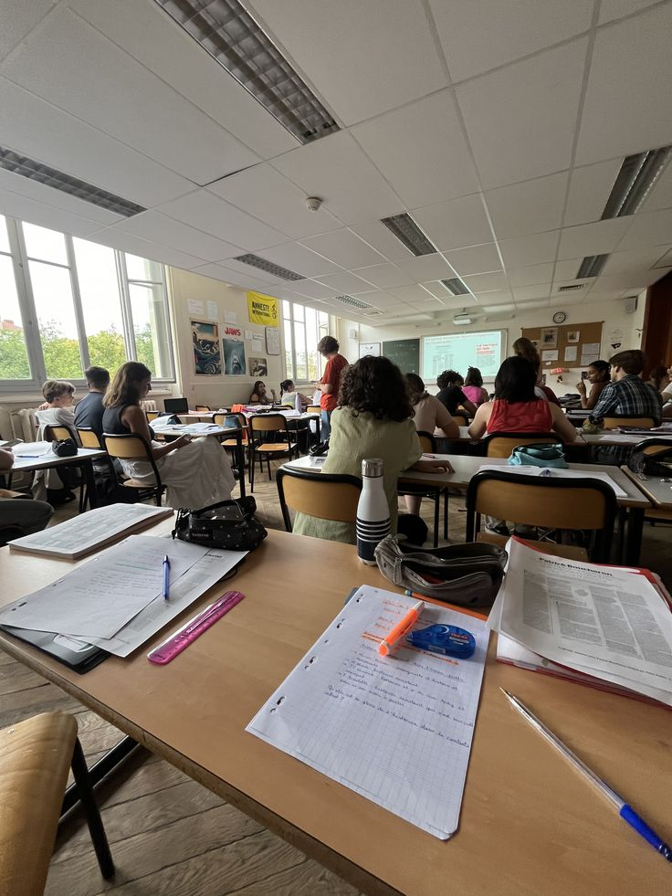
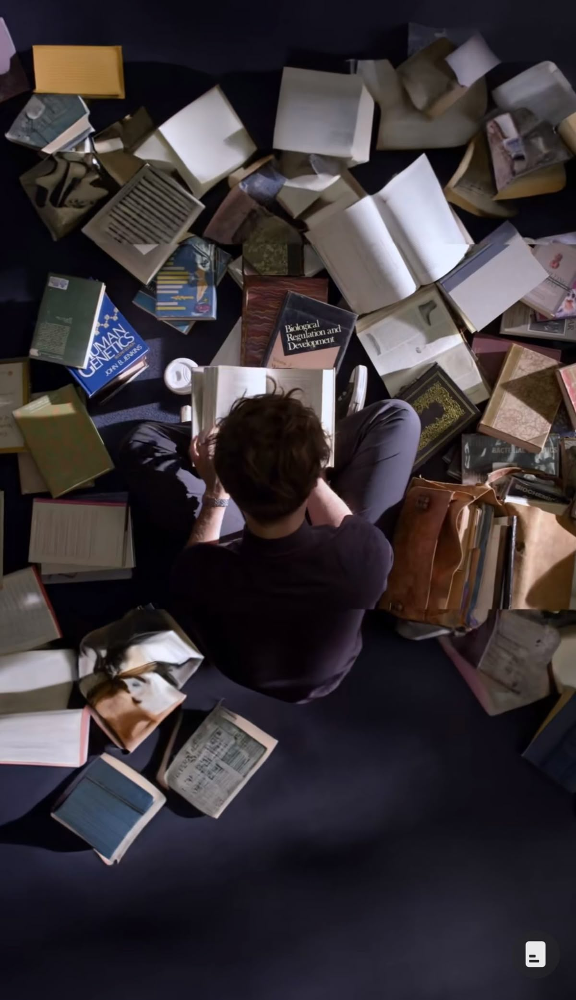
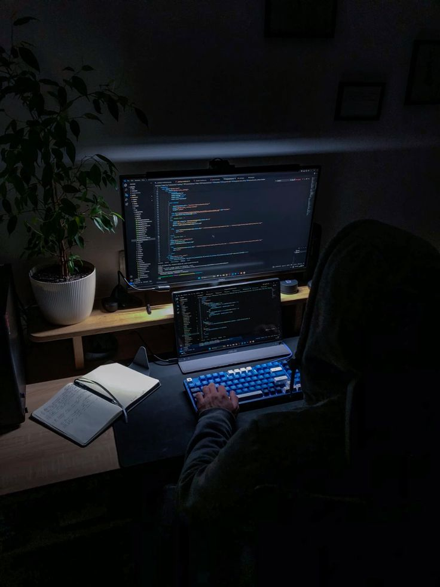
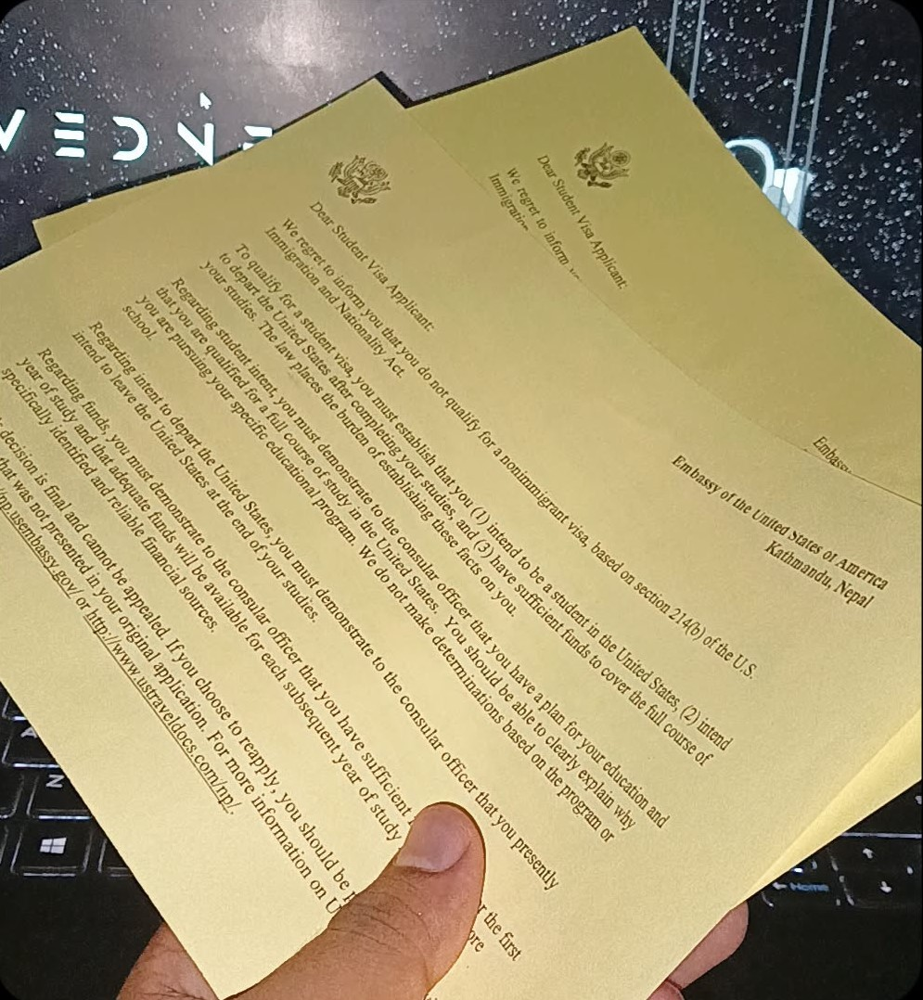

Long-form writing about the real experiences that built my direction.
These entries hold the chapters that shaped my discipline, identity, academic drive,
love for technology, and the resilience I continue to carry forward.
Themes
Education, loss, rebuilding, curiosity, technology, ambition, disappointment, and the
decision to keep going.
Timeline highlights
School yearsAcademic growthCybersecurityVisa interview
2012 - 2018
School Experience

My educational journey began in 2007 A.D. (2064 B.S.), but that same year my life was
shaken by tragedy when an attack on our home took my father away. That loss interrupted
the normal rhythm of childhood and changed the emotional background of everything that
followed. Even so, education remained one of the strongest ways I could rebuild structure
and purpose.
In 2008 A.D., I resumed school at Our Motherland Academy English Boarding School in
Chandrauta, where I studied nursery, LKG, UKG, and Grade 1. Adapting to a new environment
after such a painful period was not easy, but I gradually regained confidence and performed
well. Later, because of financial difficulty, I moved to Shree Rastriya Secondary School
and studied there from Grade 2 to 5, consistently remaining among the top students.
Since English-medium education did not continue there after Grade 5, I joined Nepal Adarsh
Secondary School for Grade 6 onward. At first I felt less confident because many students
came from private school backgrounds, but that insecurity became motivation. I worked hard,
ranked near the top, and slowly proved to myself that ability is not defined only by where
one begins.
Grade 6 also became significant for another reason: it was the first time I used a computer.
That moment awakened a deep curiosity in me. By Grades 7 to 10, school had become more than
a place for study. It became a place of friendships, competitions, school tours, sports,
classroom memories, and even small things like being known for solving the Rubik's Cube and
teaching others how to solve it. Those years shaped both my character and my future direction.
2019 - 2021
High School Experience

I chose Computer Science in high school because my curiosity about technology had already
become serious. Grade 11, however, began with an unexpected sense of loneliness. Many of
my old friends were no longer beside me, and the environment felt unfamiliar. For a while,
I focused mostly on study and kept my social world small.
As time passed, I slowly adjusted. I built new friendships and started to feel more at
ease in the academic environment. I especially enjoyed practical classes in Physics,
Chemistry, and Computer Science. Those subjects gave me both intellectual excitement and
a sense that I was moving toward the kind of future I wanted.
I completed Grade 11 with a 3.36 GPA and secured first rank in my class. In Grade 12,
I became more connected with classmates and juniors, and many students came to me for help
with their studies. That trust meant a great deal to me because it reflected not only my
grades, but also my willingness to support others.
I finished Grade 12 with a 3.26 GPA and again ranked first in my class. What began as a
quiet and lonely chapter turned into one of steady growth, academic success, and meaningful
connection.
2021 - 2024
Cybersecurity Enthusiast

My interest in cybersecurity grew from early curiosity about computers, mobile devices,
and the hidden logic behind digital systems. I wanted to understand not only how technology
works when everything is normal, but also how it can be protected when things go wrong.
Later, watching Mr. Robot intensified that curiosity and made the world of hacking
and cyber defense feel vivid and real.
In school, I studied C, HTML, CSS, PHP, JavaScript, and DBMS, and I often explored beyond
the formal syllabus. I enjoyed building websites independently because it strengthened both
my creativity and my technical discipline. The more I learned, the more I realized that
cybersecurity is not only about tools. It is about mindset, observation, and responsibility.
After high school, I began learning Python through online resources and started making small
projects such as a password strength checker and a simple calculator. These projects were
modest, but they helped me move from passive interest to active practice. Each project gave
me more confidence in coding and sharper security-oriented thinking.
My long-term goal is to become a cybersecurity analyst and eventually establish a cyber
bureau in Nepal that can contribute to digital safety, cyber awareness, and stronger
protection for the country's growing infrastructure.
2025
US Interview Experience

I attended my US visa interview at the US Embassy in Kathmandu with both hope and careful
preparation. I arrived early, stayed calm, and answered each question as clearly and honestly
as I could, especially when speaking about my interest in Computer Science and cybersecurity.
During the interview, I explained my academic background, my long-term direction, and the
reasons this field matters to me. I also responded to questions about sponsorship and future
plans with sincerity. I wanted the officer to see not only my answers, but also the seriousness
of my intentions.
Even with preparation, my visa was denied. Walking out with that result was painful because
so much hope had been tied to that opportunity. For a moment, the disappointment felt heavy.
But the experience also taught me something important: a rejection can delay a path without
destroying the dream behind it.
That day became a lesson in resilience, patience, and faith. It reminded me that real growth
often happens in the moments that do not go as planned, and that continuing forward is itself
a kind of strength.